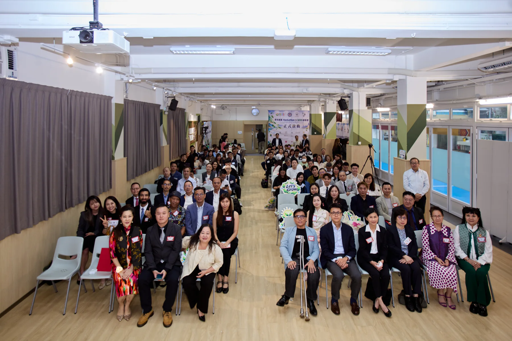

A BEGINNING, TOGETHER ／ 活動回顧
青年創業 Hackathon
及 SEED 啟動禮
2026.11.04 九龍三育中學
以破格開創可能，
以章法成就創新。
THE OCCASION ／ 攜手啟航
由一個起點，
走向持續的實踐。
SEED、九龍三育中學、生命計劃一及仁樂會攜手推動「青年創業 Hackathon」，以九龍三育中學為創新起點，結合創業教育、AI 與社會影響力實踐，支持青年將創意化為行動。
感謝每一位嘉賓蒞臨支持，與我們共同見證這個起點。每一次交流、每一份鼓勵，都為青年帶來向前探索的力量。
THE HIGHLIGHT FILM ／ 光影回顧
把這一刻，留給未來。
一分鐘回顧 · 真實活動攝影
青年創業、AI 與社會影響力，從共同見證走向實踐。
下載精華短片 ↓MOMENTS THAT MATTER ／ 現場片段
同行的面孔，
共同的期待。
交流、分享與每一份支持，
匯成青年成長路上的同行力量。



LEARNING INTO ACTION ／ 教育願景
讓創意有根據，
讓實踐有延續。
青年創業 Hackathon 是一段持續的學習歷程。青年由觀察真實社會問題開始，善用 AI 探索資料，透過導師交流與真實場景實踐，記錄證據、聆聽回饋，再修訂方案。
以九龍三育中學為起點，我們期望逐步拓展至全港、連結國際，讓更多青年在實踐中建立能力，為社會創造正面影響。
- 01
學習與觀察
理解社會需要，以資料與證據界定問題。
- 02
AI 與創業設計
探索可能，結合資源，形成可實踐的方案。
- 03
真實場景實踐
在導師及伙伴支持下，將構想化為行動。
- 04
證據、回饋、修訂
記錄社會影響，持續學習，再次實踐。

THE PROJECT IN PICTURES ／ 項目視覺
以教材連結學習，
以實踐累積成長。
教師、Mentor、採集員與影像記錄各有角色；學習卡與證據記錄，將觀察、行動和反思連在一起。

WITH APPRECIATION ／ 鳴謝
感謝每一位同行者。
感謝主禮嘉賓、顧問團、合作伙伴、嘉賓、老師、同學及台前幕後團隊，以時間、專業與熱誠支持青年成長。
THE PHOTO ARCHIVE ／ 相片珍藏
尋找您的合照。
138 張活動相片
按組別瀏覽 · 逐張下載原圖
先揀相簿，再按相片放大。原圖保留相機檔名，方便儲存及分享；您亦可輸入相片編號尋找。
THE JOURNEY CONTINUES ／ 邀您同行
一起，支持青年走得更遠。
未來，四個單位將繼續攜手，誠邀您成為同行的一份子，以經驗、專業與熱誠支持青年成長，一同為社會創造持續而正面的影響。
尋找及下載合照 ↗